Accueil › Réseau › Routage › Routage par Défaut
Routage par Défaut sur GNS3
Objectif
Ce TD reprend la même topologie que le routage statique (3 routeurs, 3 switches, 8 VPCS) mais introduit le concept de route par défaut (default route). Au lieu de définir une route statique pour chaque réseau distant, on configure une route unique 0.0.0.0/0 qui capture tout le trafic sans correspondance dans la table de routage — l'équivalent d'un "joker" réseau.
⚡ Différence avec le Routage Statique
En routage statique, chaque routeur devait connaître tous les réseaux distants :
! Routage statique : 2 routes par routeur de bord
ip route 192.168.2.0 255.255.255.0 10.0.0.2
ip route 192.168.3.0 255.255.255.0 10.0.0.2
Avec le routage par défaut, R1 et R3 n'ont besoin que d'une seule route :
! Route par défaut : 1 seule route "attrape-tout"
ip route 0.0.0.0 0.0.0.0 10.0.0.2
Étapes de configuration
1Installation et câblage dans GNS3
Même configuration matérielle que le TD Routage Statique : routeurs c3725 avec modules WIC-1T (R1, R3) et WIC-2T (R2). Switches Ethernet standard et VPCS.
Topologie du réseau

2Configuration des adresses IP des VPCS
8 VPCS configurés sur 3 réseaux distincts :
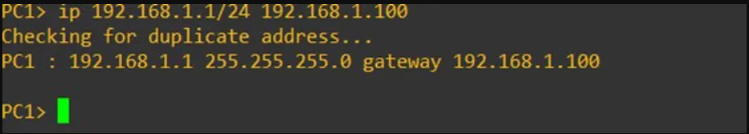
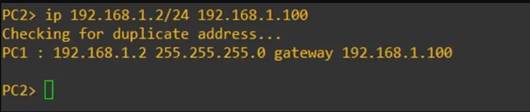
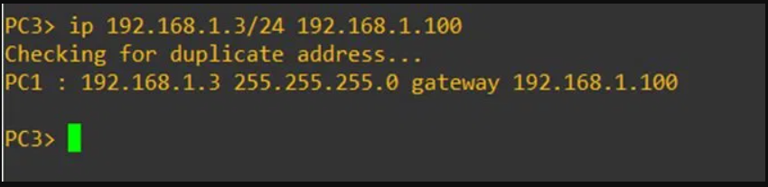
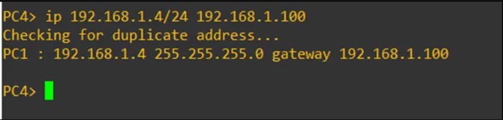
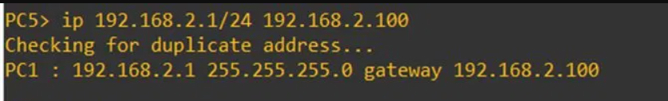
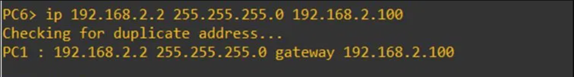
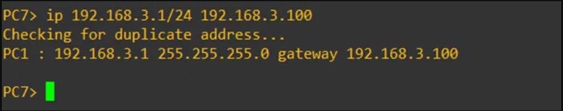
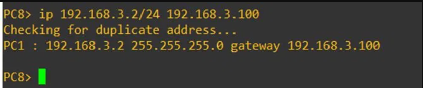
3Configuration de R1 – Route par défaut vers R2
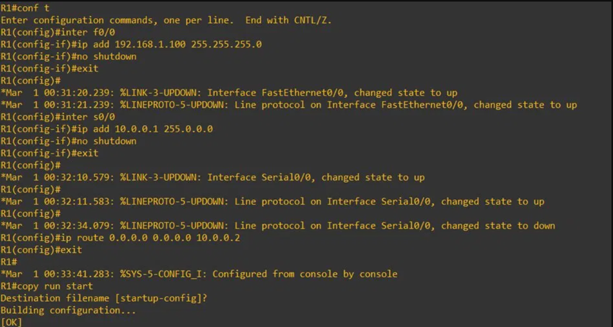
4Configuration de R2 – Routeur central avec routes statiques
R2 est le routeur central : il connaît tous les réseaux et utilise des routes statiques classiques pour router vers R1 et R3.
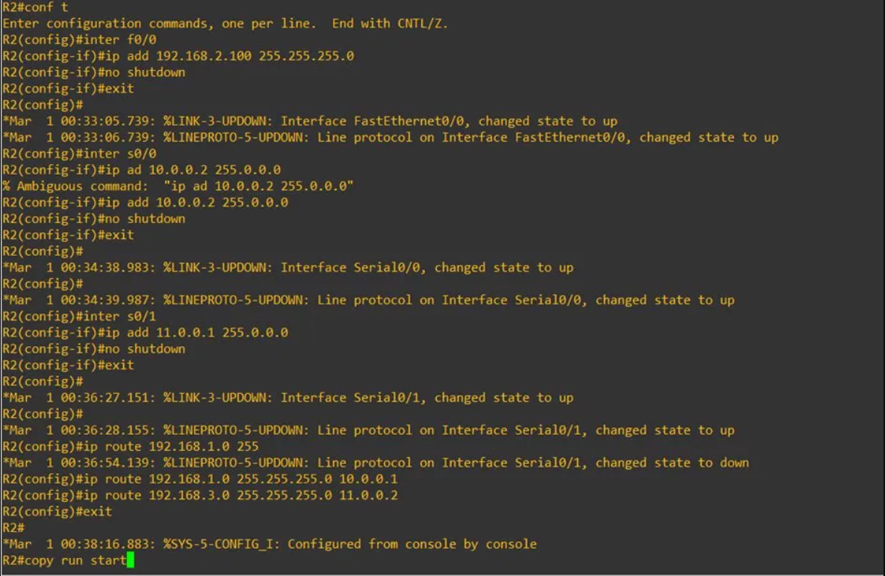
5Configuration de R3 – Route par défaut vers R2
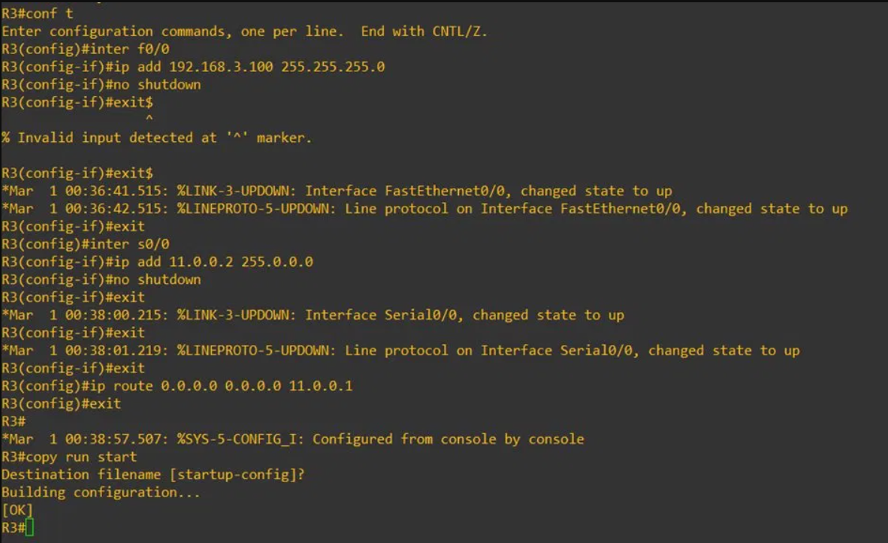
6Tests de connectivité
Vérification du routage depuis PC1 vers des machines des réseaux 192.168.2.0/24 et 192.168.3.0/24 :
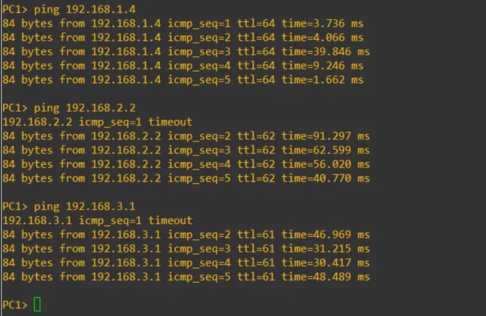
✅ Ce que j'ai appris
- Comprendre la notion de route par défaut (
0.0.0.0 0.0.0.0) et son rôle de "last resort" - Distinguer les cas d'usage : route par défaut sur les routeurs de bord, routes statiques sur le routeur central
- Réduire la complexité de configuration sur R1 et R3 (1 route au lieu de N routes)
- Sauvegarder la configuration avec
copy run startpour persistance après redémarrage - Observer le comportement des TTL dans les pings inter-réseaux (TTL=62 pour 2 sauts)